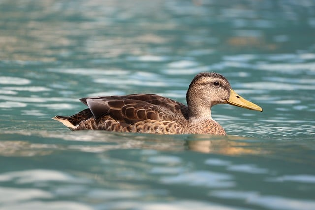

Home
About Us
Contact Us
About Us
Duck Reserver

Welcome to our company! We are dedicated to providing ponds for ducks.
Daily Tasks
- Feed the ducks
- Clean the pond
- Watch the ducks swim
How you can help the ducks
Small actions make a big difference. Here are a few ways you can help keep our ducks healthy and safe:
- Feed duck-safe food (no bread): try cracked corn, oats, or duck pellets.
- Keep a respectful distance and avoid chasing or startling them.
- Dispose of litter properly to keep the pond clean.
- Join a pond cleanup or volunteer — contact us to get involved.
Basic Duck Care Tips
If you have ducks at home or are considering getting some, here are a few basic care tips:
Provide fresh water daily.
Ensure the pond has adequate shelter.
Monitor for signs of illness and seek veterinary care if needed.